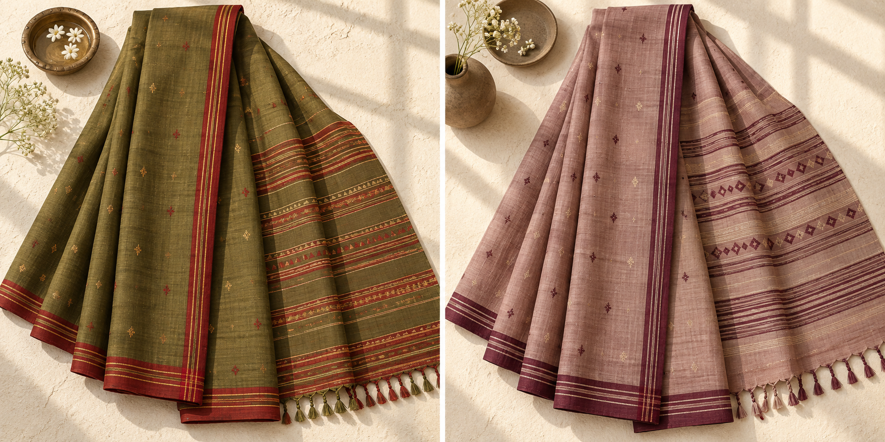
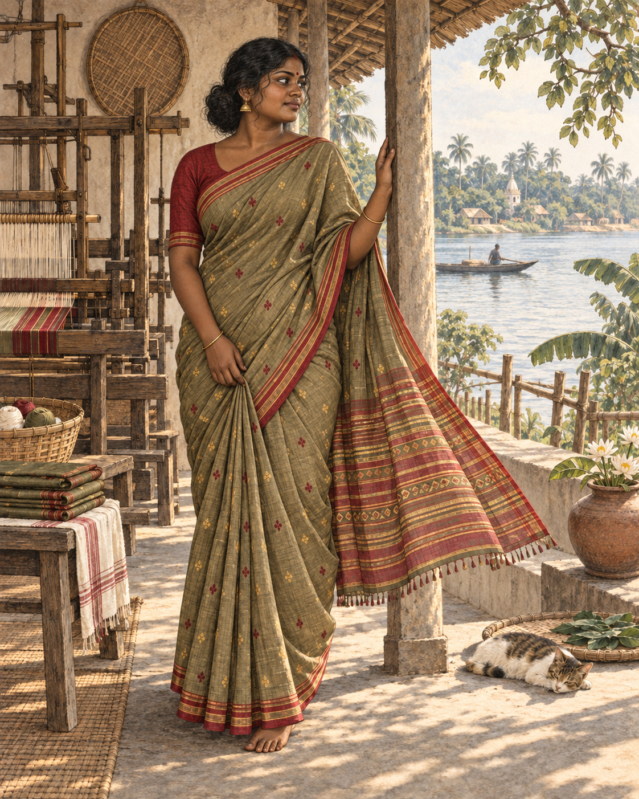

View sareeBonolata Olive Tangail
Natural cotton · Handloom
$245Tangail · Fine handloom cotton
Light, crisp cotton shaped by fine borders, little buti and rhythmic anchals—graceful handloom sarees for everyday life.
The collection
Our Tangail edit is grounded in breathable natural cotton, precise striped borders and easy drapes made to be lived in. These are demonstration pieces for the current website template; final products, photographs and prices can be replaced when inventory is ready.